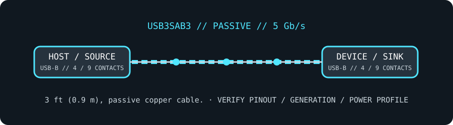

[ CABLE PRODUCT RECORD // STARTECH.COM USB3SAB3 ]
StarTech USB3SAB3 3 ft SuperSpeed USB 3.0 Type-A-to-Type-B Cable
USB 3 Type-A-to-B male cable; 3 ft; passive 5 Gb/s. This record is SKU-specific; connector shape alone does not establish protocol or capability.

CLASSIFICATION: Data, peripheral, and high-speed cables. Verify exact SKU and the connected host/peripheral requirements.
SKU-specific interface and capability
| Exact product SKU | StarTech.com USB3SAB3 |
|---|---|
| Generation and connector pinout | USB 3.0 Type-A male to USB 3.0 Standard-B male. Both ends include USB 2.0 contacts and the added SuperSpeed contacts; the 9-contact USB 3.0 Type-B connector is distinct from USB 2.0 Type-B. Pinout summary: USB 3 Type-A ↔ 9-contact USB 3 Standard-B; legacy VBUS, D−, D+, GND plus SuperSpeed TX±/RX± and associated ground/shield contacts. |
| Length and construction | 3 ft (0.9 m), passive copper cable. |
| Signaling rate | USB 3.0 / USB 3.2 Gen 1 up to 5 Gb/s; backward compatible with USB 2.0 host/peripheral connections at their negotiated rates. |
| Power limits | USB 3.0 downstream power is ordinarily limited to 5 V / 900 mA per configured standard port; the cable does not create a higher-current or USB-PD source. Actual draw is limited by the port and peripheral. |
| Compatibility limits | Use for a USB-A host/hub to a USB 3 Standard-B peripheral (for example, compatible printer, drive enclosure, or hub). A USB 2.0 B receptacle accepts only its matching plug and yields USB 2.0 signaling; do not force the larger USB 3 B plug into it. |
Compatibility & handling
- Identify both receptacle types, the exact SKU, protocol generation and direction before connecting; similar-looking USB connectors can carry different pinouts and capabilities.
- Maximum rate and power are ceilings, not guarantees: the full host/cable/peripheral chain must support and negotiate the same mode.
- Do not use the lead to defeat a port’s current limit, connect unlike power pinouts, or assume charging/video support from connector fit.
Sources & further reading
- StarTech.com — USB3SAB3 official product listingManufacturer model identification, connector configuration and product-specific length/rating.
- StarTech.com — USB 3.0 cable products and connector familiesManufacturer cable-family reference for connector and generation selection.
- USB Implementers Forum — applicable USB specificationOfficial protocol-generation, signaling and connector/power rules; host/device implementation still controls actual operation.